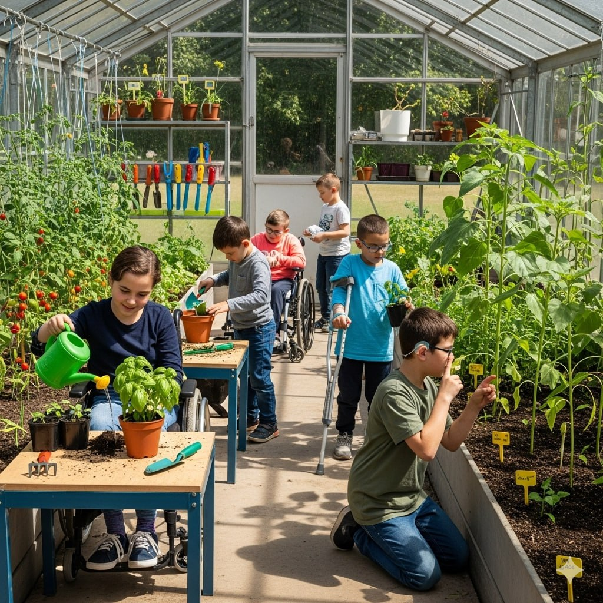
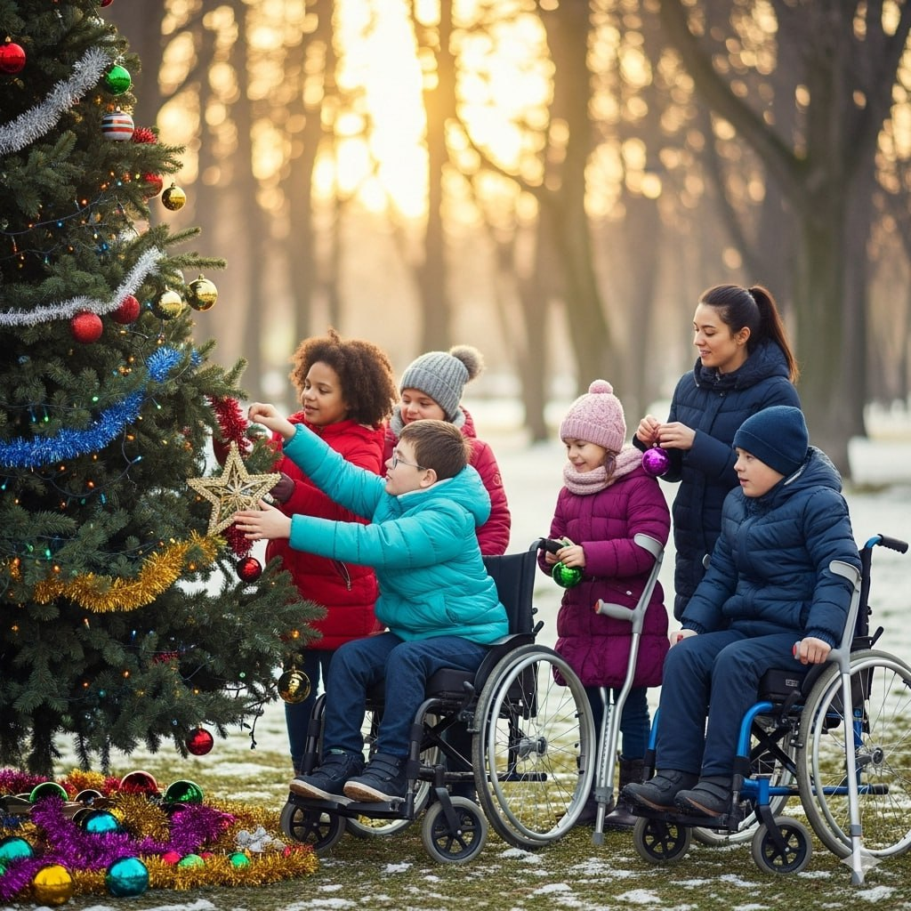
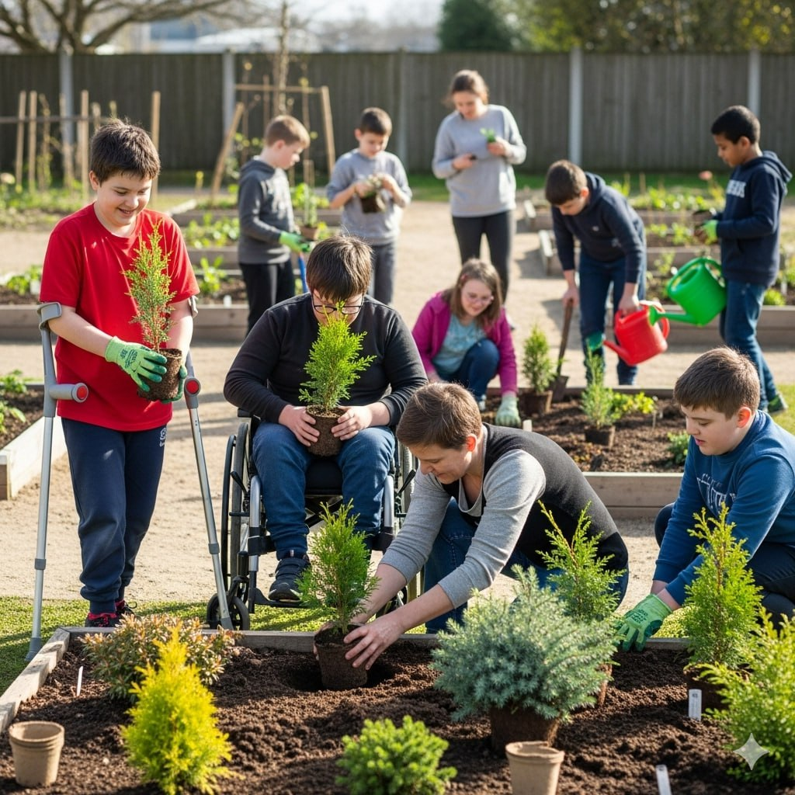
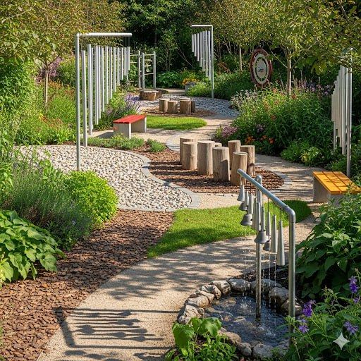
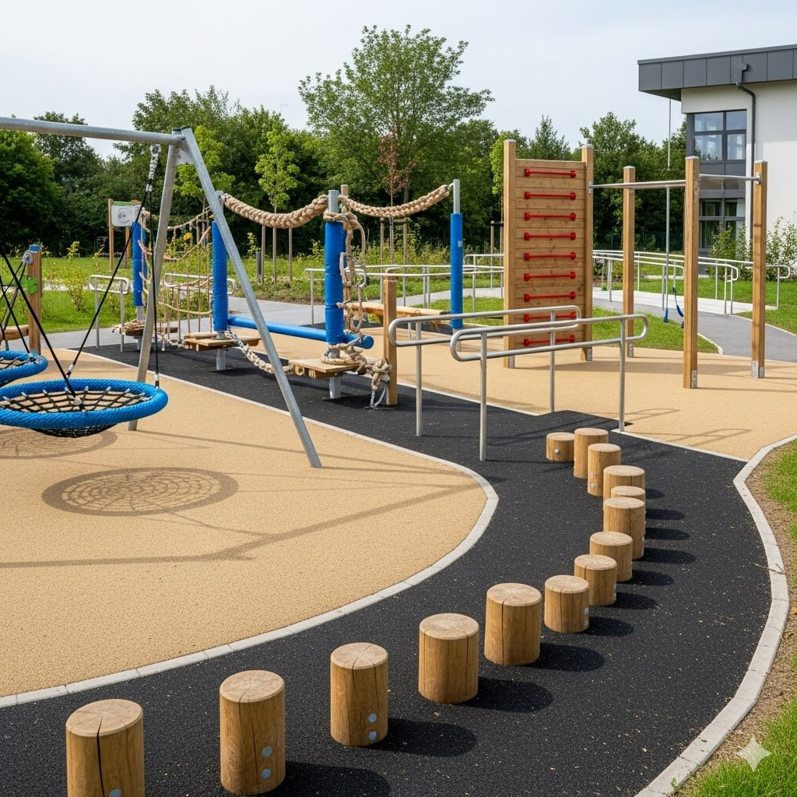
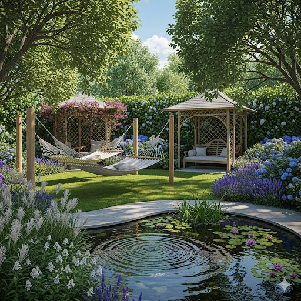
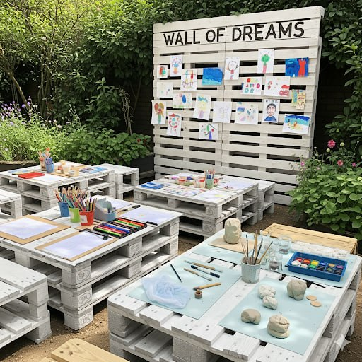
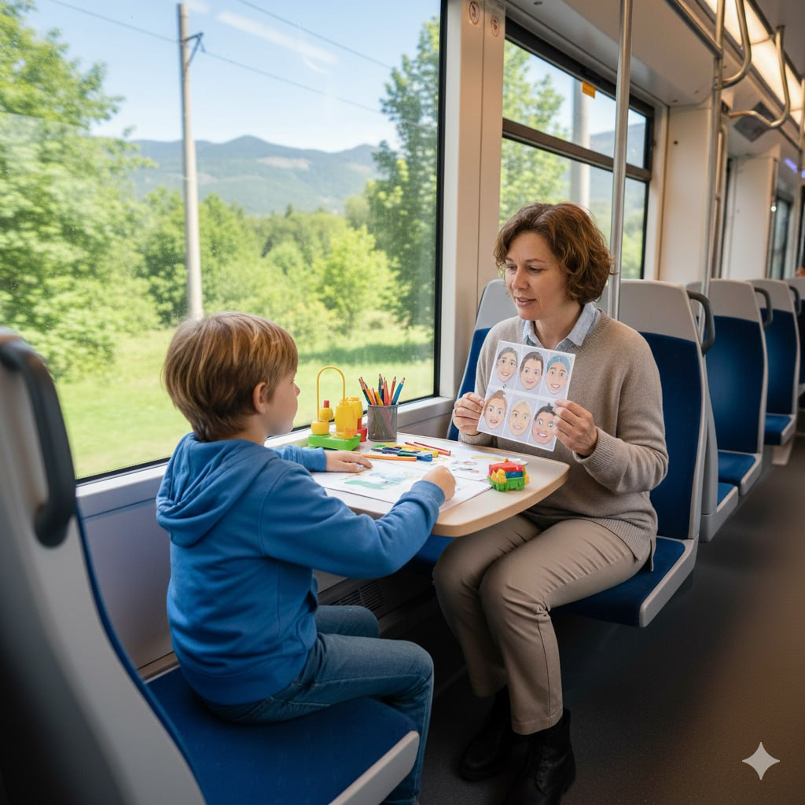
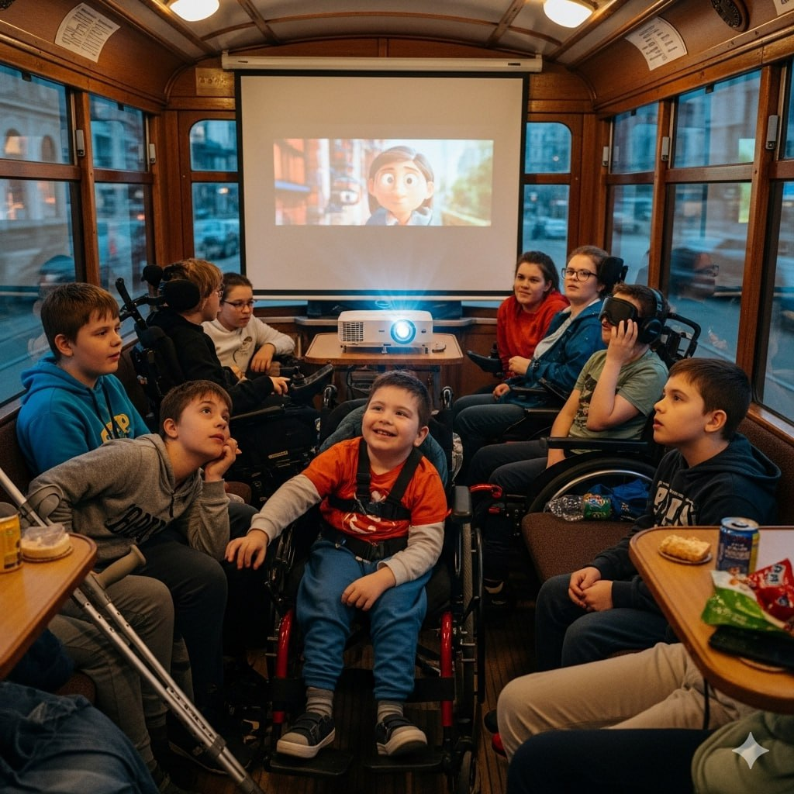

Терапевтичний сад — це спеціально спроєктований простір на свіжому повітрі, який допомагає дітям відновитися та покращити своє здоров’я за допомогою природи.
Основні цілі терапевтичного саду:
-
Через природу до зцілення.
Діти взаємодіють з рослинами, квітами, ґрунтом і водою, що допомагає їм зняти стрес, заспокоїтися та відчути себе краще. Це також стимулює їхні органи чуття: вони можуть торкатися листя, нюхати квіти, слухати спів пташок.
-
Ігровий та навчальний простір.
У саду є різні зони для ігор, наприклад, стежки з різним покриттям (пісок, каміння), невеликі грядки, де можна садити щось самому, або мініводойми. Це розвиває дрібну моторику, допомагає дітям краще розуміти навколишній світ і вчитися новому.
-
Місце для спокою.
У саду є затишні куточки, де дитина може побути наодинці, відпочити від галасу та набратися сил.
Наша мета:
- Перетворити територію дитячого реабілітаційного центру на терапевтичний сад, де кожен елемент та кожна зона відіграватимуть свою роль у реабілітації дітей, а природа буде важливим учасником у відновленні;
- Залучити до освітньо-розважальних заходів місцеве населення;
- Зробити нашу територію інклюзивною, де кожен почуватиметься безпечно та комфортно.
Унікальність саду:
Має цілорічну терапевтичну дію:У нашому саду буде 6 зон, кожна з яких відіграватиме свою функцію:
1. Зона садівничої терапії 🌻
- Високі грядки (60-80 см) для дітей на кріслах колісних.
- Сенсорні клумби з травами й квітами.
- Ягідники (малина, порічки, полуниця тощо).
Парник (теплиця) для розсади:
Невелика теплиця із прозорим дахом (полікарбонат або скло) стане цілорічною зоною садівничої терапії. Частину розсади можна висаджувати в саду, а частину – дарувати батькам або продавати на благодійних ярмарках.
Центральна ялинка:
Символ саду, «зелений центр» простору. Біля ялинки можна проводити Новорічні та Різдвяні свята, інші тематичні заходи. Діти можуть прикрашати ялинку власноруч зробленими іграшками.
Зона вічнозелених рослин:
«Зелений театр», терапія кольором та запахом.
2. Зона сенсорних маршрутів 🚶♀️🎶
Тут будуть наявні доріжки з різними фактурами, тактильні панелі та музичні інсталяції.
3. Зона рухової активності 🤸♂️💪
У цій зоні розташовуватимуться балансувальні колоди, гойдалки-гнізда, низькі канати з безпечним кріпленням, спортивні елементи для фізіотерапії (шведська стінка для вулиці, рукохід, поручні).
4. Зона спокою 🧘♀️🍃
Тут розташовуватимуться гамаки, тіньові альтанки, а також водний елемент – невеличке озерце для заспокоєння.
5. Арт-зона 🎨🖌️
Ця зона відіграватиме функцію розвитку уяви та креативу. Тут будуть столи для малювання, ліплення, арт-терапії, а також «Стіна мрій» - основна прикраса зони для дитячих малюнків.
6. Транспортна зона 🚌🚃
Трамвай – «зона терапії»:
Усередині проводитимуться заняття з логопедом, психологом.
Тролейбус – «клас творчості»:
У ньому ми розташуємо екран та проектор для перегляду розважальних та навчальних фільмів, проводитимемо групові заняття та арт-терапію взимку.
